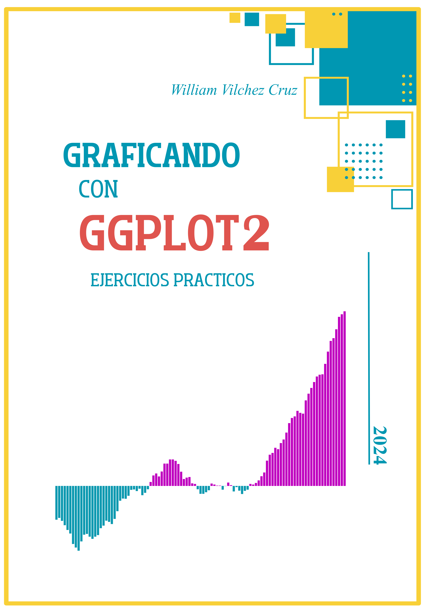

Graficando con ggplot2: Ejercicios prácticos
2024-01-04
Prefacio

Objetivos del libro
Este libro tiene la intención de servir como guía didáctica y puntual, para generar gráficas comúnmente empleados en el ámbito académico. En sus primeras páginas del libro, se abordará conceptos básicos sobre lenguaje de programación R, tidyverse y su colección de paquetes, sin embargo, a lo largo del libro nos centraremos especialmente en el uso de ggplot2. Por último, si no has trabajado en R antes sugiero encarecidamente la lectura de estos libros:
- Wickham, H., Çetinkaya-Rundel, M., & Grolemund, G. (2023). R for data science. O’Reilly Media, Inc. https://r4ds.hadley.nz/
- Peng, R. D. (2016). R programming for data science. Leanpub.http://leanpub.next/rprogramming
- Mendoza, J. (2018). R para principiantes. https://bookdown.org/jboscomendoza/r-principiantes4/